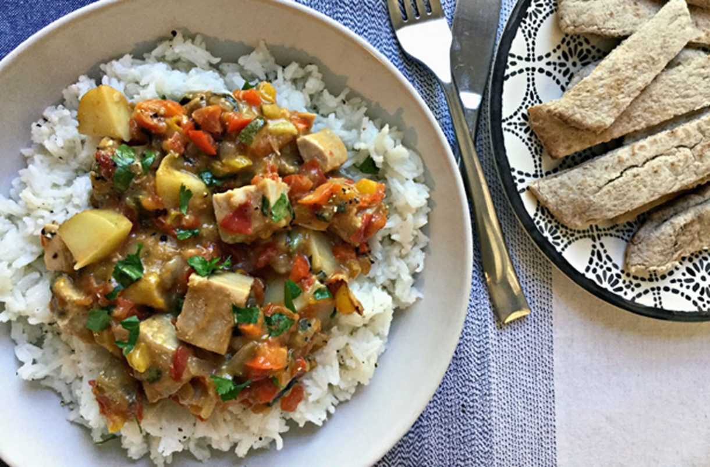

Tuna steak casserole recipe

Serves:
Cost:
Prep:
Cooking:
Skill:
4
Cheap
10 Min
0 Min
Medium
This tuna steak casserole comes highly recommended and is nice and cheap to make.
Bargain lover and mum of two Amy Sheppard runs a family food blog, creating meals using only Aldi ingredients. In her latest recipe for us here at GoodtoKnow she’s made a gorgeous summer family dinner for under a fiver. Plus, she’s packed in a whole lot of veg.
She says, ‘Summer food can be really easy – just toss a salad in a bowl, maybe a little meat or fish, and dinner is served. It’s not so easy when you have kids. Cold dinners and dinners that are largely leaf based, never seem to go down that well in our house – regardless of how hot it is!
This summer tuna steak casserole incorporates loads of colourful summer veg, chopped up and cooked down so that you (and the kids!) hardly notice them! All cooked in the same pan, it’s so simple and light, yet a little more substantial than other summer meal ideas. Best of all? This meal for 4 cost only £4.27 in total, using all Aldi ingredients!’
Ingredients
-
4 frozen Aldi Tuna Steaks (£2.49 per bag)
- 1 finely chopped red pepper (45p)
- 1 finely chopped yellow pepper (45p)
- ½ courgette finely chopped (13p)
- Drizzle of olive oil (5p)
- 2 medium tomatoes finely chopped (20p)
- 20 basil leaves finely sliced or torn (15p)
- 250g charlotte potatoes (roughly 6 potatoes costing 22p)
- 2 dessert spoons of flour (2p)
Method
- Defrost the tuna steaks
- Put a drizzle of oil in a large non stick frying pan. Add the tuna steaks to the pan and fry on a medium heat for 3 minutes, turning occasionally. Both sides should be cooked, with the middle still nice and pink. Set the steaks aside.
- Clean the frying pan, before adding to it; finely chopped red and yellow pepper, courgette and onion, with another drizzle of olive oil. Fry for 10 minutes, stirring regularly until the vegetables are soft and translucent.
- Add the flour to the pan on a low heat and mix until it’s absorbed by the oil.
- Mix the stock cubes with the water and stir until dissolved. Add a little of the stock to the pan and stir until the sauce thickens before adding more. Keep doing this until all of the stock is used and the sauce is smooth and lump free.
- Cut the potatoes into small chunks. Add them to the pan with the finely chopped tomatoes and the finely sliced basil. Season with salt and pepper. Mix well and leave to simmer on a low heat for 20 minutes, or until the potatoes are tender.
- Using a serrated knife cut the tuna steaks into bite sized pieces. Roughly 12 pieces per steak. Add them to the pan and simmer for a further 2 minutes until cooked through.
- Serve on a bed of rice.